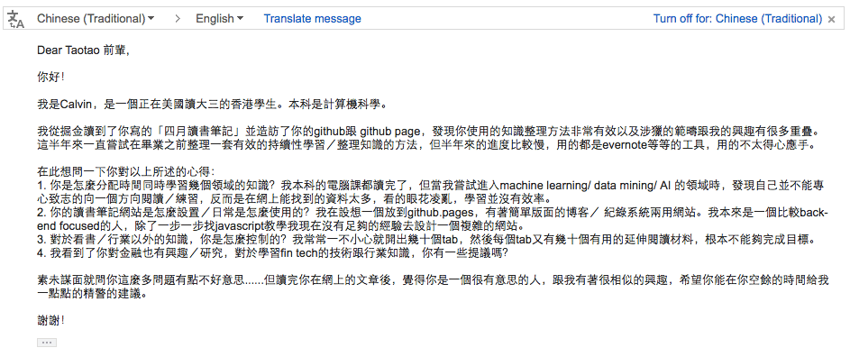
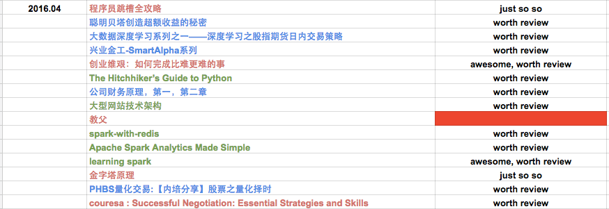
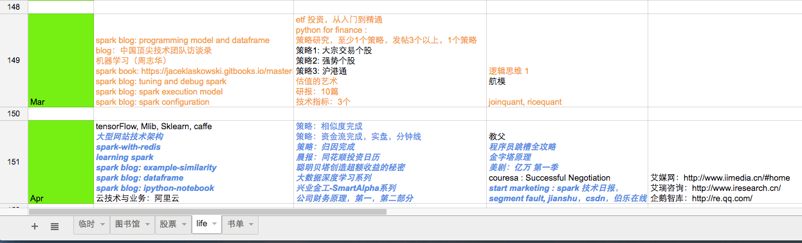
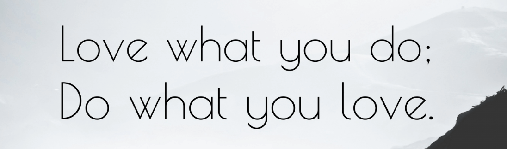

一封素不相识的来信
2016-05-09
写在前面
前几天无意间收到一封email，是一位小学弟写的，看到这封信，我仿佛看到大学时期的自己。从大一开始就没消停过，一开始捣鼓航模，还想趁军训期间和同学倒卖医用纱布，面膜，防嗮霜什么的；后来大二开始学习电路后，又开始捣鼓单片机，嵌入式，arduino，电路设计；大三后想出国又去整托福雅思，再后来发现没法拿到全额奖学金后；大四就开始乖乖找工作，学驾照，做毕业设计，最后大四下学期就来上海开始在第一家［也是现在的这家］公司实习。
回首大学时期，期间真的遇到过无数蛋疼的事情，也不断的在各个迷茫的漩涡中 back and forth。但是现在，在毕业2年后，我却觉得就像一句台词说的那样：当回首过去，才知道那些当时看起来的坎坎坷坷其实没也多大不了。
I always knew looking back on the tears would make me laugh.
我本想认真的回复他，可是想想，也许现实中还有很多像他一样的学弟学妹，也正面临各种艰难的抉择和迷茫的漩涡。如果我把给他的回复放到博客上，只要其他的小学弟学妹也能看到，岂不最大化这封 email 的价值？［sorry，在金融业浸淫两年有余，做什么事都容易把价值最大化，投入产出比这些 f**king awesome factors 考虑进去］
- 这是那位学弟的来信［已征求学弟同意，允许发布到博客上］

1. The Key Problems
下面，是我根据这封 email 的内容和我的个人经验，总结的一些这位学弟面临的问题。到最后，我会一一再次回答学弟信里提到的几个问题。
- How should I schedule my time when I want to broaden my horizens?
- When I want to learning something new, there always be endless materials to read!
- How to build a web page to record your daily routines or growth plan?
2. About Schedule Time
关于怎么合理安排时间，这是一个比较大的话题，但是在生活中能时时遇到，我觉得这个问题没有一个可以量化的答案，但是可以有一个准则：优先考虑最重要的事，尽量顾及不重要的事，给突发急事优先处理权。
举个例子，如果你想做一个技术型管理者，可以给自己制定了这样一个发展路线：
- 在自己擅长的技术方面，做到这个技术领域的高手，比如说 python，后台开发框架，分布式架构设计
这是你知识的深度；
- 在管理能力培养方面，多多看书，听相关讲座和分享，多跟老人交流分享
这是你知识的广度；
当你已经开始熟悉一个领域，并且想对其他方面有所了解的时候；即当你在某些方面有一些深度了解，又想扩宽自己的知识面的时候。你应该怎么安排你的时间呢？在我看来，或者以我的个人经历来看，我很推荐二八原则，即可以把 20% 的时间花在其他方面上，并且严格控制好限度，千万不可以为一昧想看其他方面的东西而影响当前一些工作和正常学习的进度。
3. About Endless Materials
这个话题是一个比较好玩的话题，不知道大家有没有这样一个感受，从小学到大学，成绩最好的那些同学，真的不是做作业做得最多的那些同学。同样的，一个公司里最能干的人，很少是那些加班加到天昏地暗的人。我一直对这种现象很好奇，知道最近几年开始慢慢带小孩儿［侄儿］，开始有去想如何教育孩子的经验之后，我才慢慢理解这种现象：在这种学习，工作的社会活动中，你投入的量越多，并不一定能带来质的提升。
简单的说，你所进行的学习，工作，需要你投入脑力和体力这两大核心要素，而在很多时候，我们发现一些同学去做了很多练习册，也发现一些同事无休止的加班，其实这些都是投入了大量体力的劳动，但是，其中的大部分人在这个体力活动的过程中，却很少去进行思考：
- 这道题为什么会错？
- 我在第一次接触这道题的时候是怎么去思考的？
- 下一次遇到这种题，切入点，思考点应该是什么？
也就是说，有些情况下，即使你投入了大量的体力，但却很少动用脑力去思考，反思的话，很难会有质的提升。言归正传，之所以要扯上面这些，我是想强调一个概念：你找的资料越多，看得越多，并不一定能让你懂得越多。
所以，当你想学一个新事物的时候，面临那么多纷繁的资料，你怎么办？我觉得，如果你找了10份资料，那就简单看下，从其中先选出你觉得最好的2～3份资料，然后 completely delete 其他落选的资料，把你分配的 20% 时间全部花在选出来的这 2～3 份资料上面。看完之后，你一定会知道你对那个新的学科，新的领域了解多少，你也会知道如果你还想深入下去，你还需要哪些东西需要学习，有的放矢。
4. About Blogs for Personal Use
这里的可选项很多，但我觉得基于 github pages 的博客比较方便，简洁，灵活。这个网上有很多教程，只需要 google 一下 ： github blog pages 就行了，我这里也专门有一个简单教程和模版：如何使用 github pages 搭建博客。
除了博客，我强烈推荐使用 google docs 来做一些短期规划和跟踪，我之前有用过很多协同工具来做计划任务的安排，比如说有道云协作，evernote，但它们对我来说都太过于复杂了，还是觉得 google docs 好用。
对于使用工具来制定，记录和跟踪你的短期安排，长期规划，我有一个小建议，不管用什么工具，一定要明确工具就是工具，不要把太多的时间花在工具上面，否则就本末倒置了。
下面是我一些 google docs 的截图：
- 每月读书规划和记录［当月下旬最后几天会根据当月读书情况完成下月的读书计划］

- 每月安排，出于公司隐私考虑，这里面有删掉了一些工作内容

5. 小步总结
其实，上面回答了三个方面的问题：
- 如何规划时间
- 如何学习一门新技能
- 如何利用工具制定，跟踪个人计划
每个方面都没有往深了说，但我觉得能表达到意思就够了，如果觉得有问题的可以直接留言或通过其他方式联系我，可以一起探讨。
6. 一一回答信中的问题
下面一一回答信中的问题：
- 你是怎麼分配時間同時學習幾個領域的知識？我本科的電腦課都讀完了，但當我嘗試進入machine learning/ data mining/ AI 的領域時，發現自己並不能專心致志的向一個方向閱讀／練習，反而是在網上能找到的資料太多，看的眼花凌亂，學習並沒有效率。
我一般在想学习其他领域的时候，我会根据当前工作，生活安排情况，最多安排出 20% 的时间，在短期内把这 20% 的时间全部用到那个新领域上去。之后再根据对该领域的了解和自身职业发展，兴趣爱好情况，对这个领域的安排做调整。 例子：在团度 4月的团建上，我发现自己还是很喜欢台球，于是安排了这个月的 5% 左右的时间在台球学习和整理上，之后会把相关资料放到博客上，或者你也可以先到 github 上看：2016-04-29-pools-and-billiards
- 你的讀書筆記網站是怎麼設置／日常是怎麼使用的？我在設想一個放到github.pages，有著簡單版面的博客／ 紀錄系統兩用網站。我本來是一個比較back-end focused的人，除了一步一步找javascript教學我現在沒有足夠的經驗去設計一個複雜的網站。
如果你想有一个博客来制定，安排，跟踪你的学习规划，现学 html，js，css 是完全不够的，而且是本末倒置的。All you need is just a tool other than building the tool. 我一般都使用 google docs 和 基于 github pages 搭建的博客，教程在这里：如何使用 github pages 搭建博客 ，你可以看这个教程页面了解更多。
- 對於看書／行業以外的知識，你是怎麼控制的？我常常一不小心就開出幾十個tab，然後每個tab又有幾十個有用的延伸閱讀材料，根本不能夠完成目標。
就像我在第一个问题里面回复的一样：首先，我会想清楚除了
主营业务之外，我最想做什么。第二，我会去单独找一份资料，并且深度学习那份资料去了解这个我想学习的东西。例子：我5月份想系统学习台球知识，网上的台球教程有很多，当然也很有可能一下子开十几个 tab 页面出来。我的做法是，我找一个微信公众号［我找的是taiqiujiaoxue这个公众号］，把这个公众号里的文章全部看完［截至5月13号，我大概看了这个公众号上 2.5 年的文章］。 相信我，千万不要一开始就找很多资料，去找1～3份不错的资料，然后深度研读他们，读完你会知道，针对于那个领域，你还需要了解什么。
- 我看到了你對金融也有興趣／研究，對於學習fin tech的技術跟行業知識，你有一些提議嗎？
fin-tech 其实定义很广泛，我也不知道你具体想学哪个细分领域的知识。fin-tech 是 financial 和 technology 的结合，也是最近几年才兴起的概念，特别是伴随大数据的兴起，最近一两年股市的跌宕起伏，fin-tech 也开始一波强势宣传。但是，万变不离其宗，简单的说，fin－tech 就是金融 ＋ 互联网。如果你想学习这方面的知识，我可以从 fin-tech 的一个方面［量化投资］给你一些建议和我的一些经验：第一，学习掌握基本的金融概念和知识；第二，了解一些互联网行业从业知识；第三，使用相关网站［uqer.io, quantopian.com, www.worldquant.com 等］；第四，关注这个行业的业内新闻，紧跟发展节奏。
7. Words to share with you
这封回信也差不多写完了，作为结尾，我想说，其实每个人的见解都有其局限性，所以对比自己有经验的人的意见和建议，都需要先对比自身情况，选择性接收。
但是，有一些话，有一些哲理却是更古不变的，所以，作为结尾，我想以几句话和各位一起分享，你们可以不同意我上面所说的任何话，但是对下面的几句话，keeping them in mind is a much wiser choice:
- I always knew looking back on the tears would make me laugh;
- You are what you’ve done in the past, what you’re doing tells what you will be tomorrow;
- Be the top 20% in your field;
- Keep 20/80 principle in your mind;
- Something reasonable in your eyes is unbelievable to others;
- A thing turns into its opposite if pushed too far;
最后，祝大家：Love what you do, do what you love.
